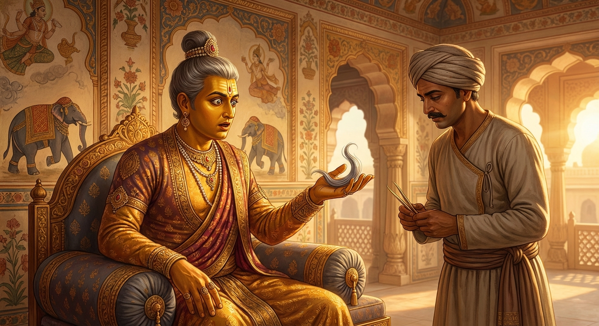

9. මඛාදේව ජාතකය (9)
“උත්තමඞ්ගරුහා මය්හං” (මගේ හිසෙහි හටගත්) යන මේ ගාථාව ශාස්තෲන් වහන්සේ ජේතවනාරාමයෙහි වැඩවසන සමයෙහි මහා අභිනිෂ්ක්රමණය අරබයා වදාළ සේක. ඒ පුවත යට නිදාන කථාවෙහි කියන ලද්දේමය. ඒ කාලයෙහි භික්ෂූහු බුදුරදුන්ගේ ගිහිගෙන් නික්මීම වර්ණනා කරමින් හුන්නාහුය. ශාස්තෲන් වහන්සේ දම්සභාවට වැඩමවා පනවන ලද බුදු අසුනෙහි වැඩ සිට මහ සඟන ඇමතූ සේක. “මහණෙනි, දැන් කවර කථාවකින් යුතුව හුන්නාහු ද?” “ස්වාමීනි, අන් කථාවක් නොව ඔබවහන්සේගේ ගිහිගෙන් නික්මීම වර්ණනා කරමින් හුන්නෙමු.” එවිට බුදුරදුන්, “මහණෙනි, තථාගතයන් වහන්සේ දැන් පමණක් මහබිනික්මන් කළාහු නො වෙති. පෙර ද නික්මුණාහුමයැ” යි වදාළ සේක. භික්ෂූහු එම අරුත පැහැදිලි කරනු සඳහා භාග්යවතුන් වහන්සේට අයැද සිටියහ. භාග්යවතුන් වහන්සේ භවාන්තරයෙන් වැසී තිබුණු ඒ කරුණ ප්රකට කොට වදාළ සේක.
අතීතයේ විදේහ රට මිථිලා නුවර මඛාදේව නම් ධර්මිෂ්ඨ ධර්මරාජයෙක් විය. ඔහු වසර අසූ හාරදහසක් කුමාර ක්රීඩා කළේය. එපමණ කලක් යුව රජකම ද, එපමණ කලක් ම මහරජකම ද කොට දීර්ඝ කාලයක් ගෙවා දිනක් කරණවෑමියා ඇමතීය. “යහළුව, කරණවෑමිය, යම් දවසක මගේ හිසෙහි පැසුණු කෙස් දකින්නේ නම් මට දන්වනු මැනව.” කරණවෑමියා ද දීර්ඝ කාලයක් ගෙවා එක් දවසක් අඳුන්වන් කෙස් අතර පැසුණු කෙසක් දැක, “දේවයනි, එක් පැසුණු කෙසක් පෙනේයැ” යි සැළකළේය. “එසේ නම් යහළුව, ඒ නර කෙස උදුරා මගේ අල්ලේ තබනු” යි කියන ලද්දේ, ඔහු රන් අඬුවකින් එය උදුරා රජුගේ අල්ලෙහි තැබීය. එතැන් සිට රජුට අසූ හාරදහසක් අවුරුදු ආයුෂ ඉතිරි ව තිබුණේය. එසේ තිබියදීත් නර කෙස දැක, මරුවා අවුත් ඉදිරියෙහි සිටියාක් මෙන් ද, ගිනිගත් පන්සලකට (කොළ සෙවිලි කළ ගෙයකට) පිවිසියාක් මෙන් ද සිතමින් සංවේගයට පැමිණ, “බොළඳ මඛාදේවයනි, කෙස් පැසෙන තුරුත් ඔබට කෙළෙස් අත්හරින්ට නො හැකි වූවෙහියැ” යි සිතීය.

මෙසේ රජු නර කෙස් හටගත් බව මෙනෙහි කරත් ම ඇතුළත දාහය හටගත්තේය. සිරුරින් ඩහදිය වැගිරිණි. ඇඳි වස්ත්ර මිරිකා ඉවත් කළ යුතු තත්වයට පත්විය. “අද ම මා විසින් ගිහිගෙන් නික්මී පැවිදි විය යුතුයැ” යි සිතා කරණවෑමියාට ලක්ෂයක් වටිනා ගම්වරයක් දී, දෙටු පුතු කැඳවා, “දරුව, මගේ හිසෙහි නර කෙස් පහළ විය. මම දැන් මහල්ලෙක් වීමි. මා විසින් මිනිස් ලොව කම් සැප විඳින ලදී. දැන් දිව්යමය කම් සැප සොයන්නෙමි. මට ගිහිගෙයින් නික්මීමට දැන් කාලයයි. ඔබ මේ රාජ්යය පිළිපදින්න. මම පැවිදි වී මේ මඛාදේව අඹ වනයෙහි වෙසෙමින් මහණ දම් පුරන්නෙමි” යි කීය. මෙසේ පැවිදි වනු කැමති ඔහු වෙත ඇමැතියෝ පැමිණ, “දේවයන් වහන්ස, ඔබ වහන්සේට පැවිදි වීමට කුමක් හේතු වීදැ” යි විමසූහ. රජු පැසුණු කෙස් අතින් ගෙන ඇමැතියන්ට මේ ගාථව කීය.
“මගේ හිසෙහි හටගත්, මේ වයස පැහැර ගන්නා වූ, දේවදූතයන් වැනි වූ නරකෙස් පහළ විය. එබැවින් මේ මට පැවිදි වීමට කාලයයි.”
එහි “උත්තමඞ්ගරුහා” යනු කෙස් ය. අත් පා ආදි සියලු අනෙක් අඟපසඟයන්ට වඩා උසස් වූ හිසෙහි වැඩුණු බැවින් කෙස් “උත්තමඞ්ගරුහා” (උත්තමාංගයේ හටගත්) යැයි කියනු ලැබේ. “ඉමෙ ජාතා වයොහරා” යනු, දරුවනි, බලන්න; නර කෙස් පහළ වීමෙන් ත්රිවිධ වයස් (බාල, තරුණ, මහලු) පැහැර ගන්නා හෙයින් මේවා “වයොහරා” නම් වේ. “පාතු භූතා” යනු උපන්නේය (හටගත්තේය) යන්නයි. “දෙවදූතා” යන්නෙහි ‘දේව’ යනු මරුවා ය. ඔහුගේ දූතයා ‘දේවදූත’ නම් වේ. හිසෙහි නර කෙස් පහළ වූ කල්හි මරුවාගේ ළඟ සිටියාක් මෙන් වෙයි. එම නිසා නර කෙස් “මාරයාගේ දූතයන්” යැයි කියනු ලැබේ. නොඑසේනම් දෙවියන් වැනි දූතයන් බැවින් දේවදූත නම් වේ. යම්සේ සිව්බරණින් සැරසුණු දේවතාවියක අහසෙහි සිට “අසවල් දවසෙහි ඔබ මිය යන්නේයැ” යි කී කල්හි එය එසේම සිදු වෙයි ද, එලෙසම හිසෙහි නරකෙස් පහළ වූ කල්හි එය දේවතාවියකගේ ප්රකාශනයක් හා සමාන වෙයි. එම නිසා නරකෙස් “දෙවියන් සමාන දූතයන්” යැයි කියනු ලැබේ. එසේත් නැතිනම් විසුද්ධි දෙවියන්ගේ (බුදු පසේබුදු රහතන් වහන්සේලාගේ) දූතයන් යන අරුතින් ද ‘දේවදූත’ නම් වේ. සියලු බෝසත්වරු මහල්ලකු, රෝගියකු, මළ සිරුරක්, පැවිද්දකු යන පෙරනිමිති දැක සංවේගයට පැමිණ ගිහිගෙයින් නික්ම පැවිදි වෙත්. එහෙයින් (ථේරගාථා වල) මෙසේ කියන ලදී:
“මහරජ, මම මහල්ලකු ද, රෝගයකින් දුකට පත් වූවෙකු ද, එසේම ආයු ගෙවී ගිය මළ සිරුරක් ද, කසාවත් හැඳි පැවිද්දකු ද දැක; එම කරුණු හේතුවෙන් මම පැවිදි වූවෙමි.”
මේ අයුරින් නර කෙස් විසුද්ධි දෙවියන්ගේ දූතයන් වූ බැවින් “දේවදූත” යැයි කියනු ලැබේ. “පබ්බජ්ජාසමයො මමා” යන්නෙන්, ගිහිභාවයෙන් නික්මුණු අරුතින් “පබ්බජ්ජා” (පැවිද්ද) යන නම ලත් ශ්රමණ ස්වරූපය ගැනීමට මට සුදුසු කාලය පැමිණියේයැ යි දක්වයි.
රජතුමා මෙසේ පවසා එදින ම රාජ්යය අතහැර තාපස පැවිද්දෙන් පැවිදි විය. හෙතෙම එම මඛාදේව අඹ වනයෙහි ම වෙසෙමින් අසූ හාරදහසක් අවුරුදු සතර බ්රහ්ම විහරණ වඩා, නො පිරිහුණු ධ්යාන ඇත්තේ, කළුරිය කොට බ්රහ්ම ලෝකයෙහි උපන්නේය. නැවත ඉන් චුත ව මිථිලා නුවර ම ‘නිමි’ නම් රජව ඉපිද, පිරිහෙමින් පැවැති තම රාජ වංශය නැවත සකස් කොට (ඝටා), එම අඹ උයනෙහි ම පැවිදි ව බ්රහ්ම විහරණ වඩා නැවත බ්රහ්ම ලෝකයට ගියේය.
බුදුරජාණන් වහන්සේ ද, “මහණෙනි, තථාගතයන් වහන්සේ දැන් පමණක් මහබිනික්මන් කළාහු නො වෙති. පෙර ද නික්මුණාහුයැ” යි මේ ධර්ම දේශනාව ගෙනහැර දක්වා චතුරාර්ය සත්යය ප්රකාශ කළ සේක. සත්ය දේශනාව අවසානයෙහි ඇතැමෙක් සෝවාන් වූහ, ඇතැමෙක් සකෘදාගාමී වූහ, ඇතැමෙක් අනාගාමී වූහ. මෙසේ භාග්යවතුන් වහන්සේ මේ කථා වස්තූන් දෙක කියා අනුසන්ධි ගළපා ජාතකය සමාප්ත කර වදාළ සේක. “එකල කරණවෑමියා වූයේ දැන් මේ ආනන්ද ය. පුත්රයා වූයේ රාහුල ය. මඛාදේව රජ වූයේ මම ම වෙමි.”
මඛාදේව ජාතක වර්ණනාව යි (නව වැන්නයි).